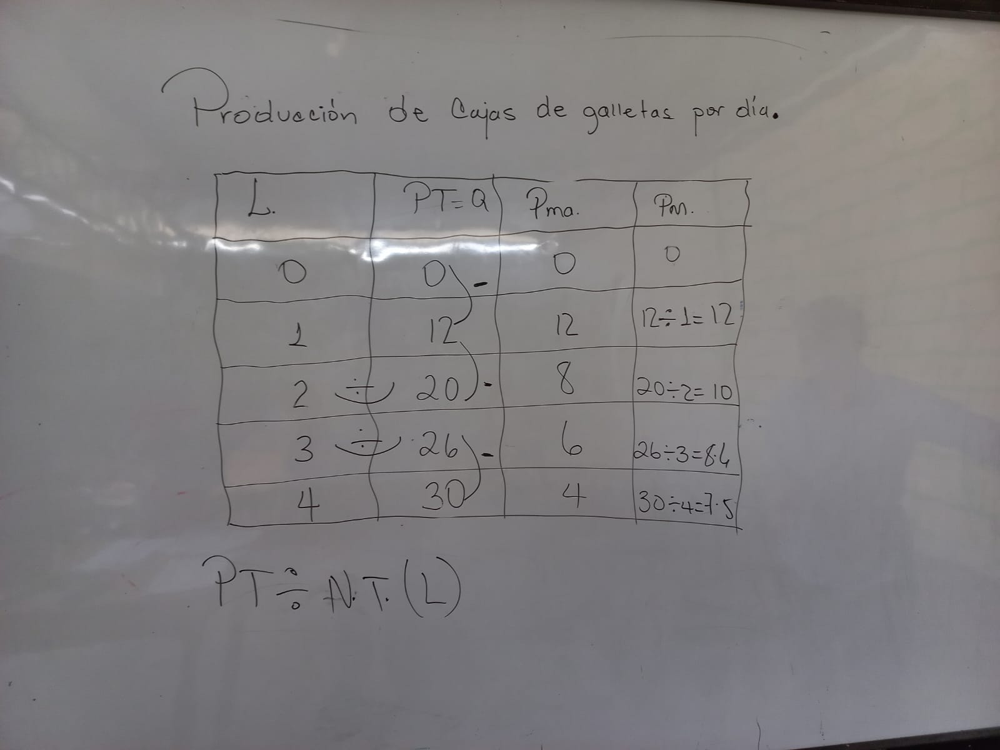
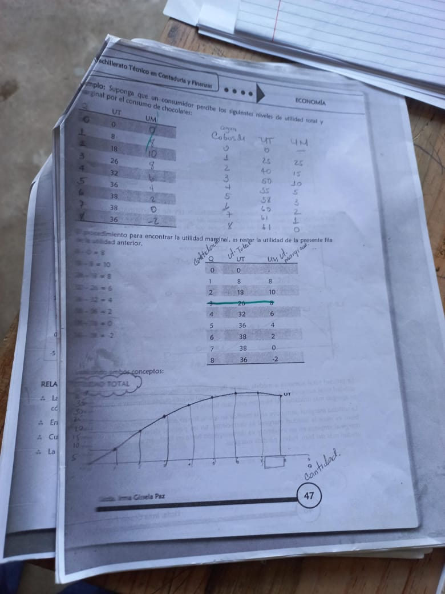
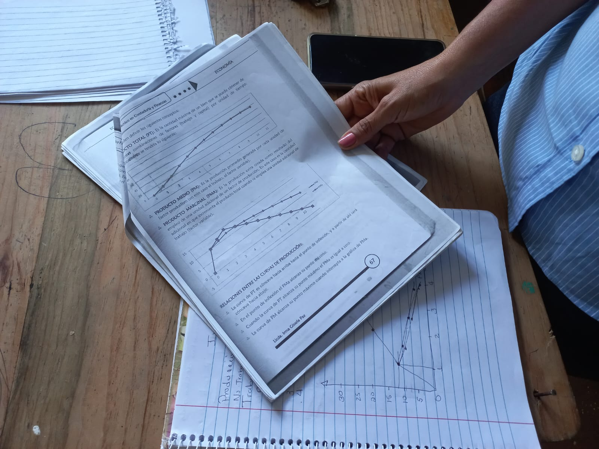

Bachillerato técnico profesional en contaduría y finanzas
El bachillerato técnico profesional en contaduría y finanzas (BTPCF) consiste en la enseñanza del área de contabilidad y administración.
La carrera tiene una duración de tres años incluyendo el tronco común.



La carrera cuenta con las siguientes clases a lo largo de su trayecto: